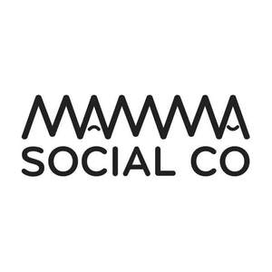

Trade Mark Journal No.2025/031 1 August 2025
UK00004228677 3 July 2025 (9,21,25,35,41,42,45)

- Class 9
- Downloadable software and mobile applications for social networking, connecting parents, legal guardians and caregivers; Downloadable software and mobile applications to access online courses, educational materials, interactive media, and publications in the fields of parenting, pregnancy, child-rearing, health, well-being and childcare; downloadable electronic publications (e.g. e-books, digital magazines, and online journals) in the fields of parenting, health, pregnancy, child-rearing, well-being and childcare.
- Class 21
- Household or kitchen utensils such as containers, bottles, mugs, cups, drinking glasses, storage bins, candle jars; household or kitchen utensils for use by babies, and toddlers, such as sippy cups and snack containers.
- Class 25
- Clothing, loungewear, nursing apparel, and baby clothing; one-piece infant bodysuit; headgear, namely, caps and hats.
- Class 35
- Retail services connected with the sale of clothing, household items, and baby care products, provided via an online platform and temporary pop-up retail locations; market research services; marketing services, namely brand partnerships, influencer collaborations, and promotional campaigns management.
- Class 41
- Educational services, namely conducting workshops and seminars in the fields of parenting, pregnancy, child-rearing, wellness, childcare, personal development and relationships; entertainment services, namely, organising community events for parents and/or children; production, publication and distribution of podcasts featuring topics related to parenting, pregnancy, child-rearing, motherhood, wellness, personal development and relationships, lifestyle, and community stories.
- Class 42
- Online non-downloadable software platform for retail services featuring clothing and household items; providing online non-downloadable software platform for social networking, connecting parents, legal guardians and caregivers; providing online non-downloadable software platform for accessing online courses, educational materials, interactive media, and publications in the field of parenting, pregnancy, child-rearing, health, well-being and childcare; hosting of electronic publications, namely e-books, digital magazines, and online journals in the aforementioned fields.
- Class 45
- Providing information, advisory and consultancy services in the fields of parenting, family wellbeing and personal development; providing social support services for families and caregivers; organising and conducting support groups for parents and caregivers; providing online social networking services via mobile applications and online platforms to connect caregivers and parents; babysitting services.
Mamma Social Co Limited
Representative: Asserson Law Offices